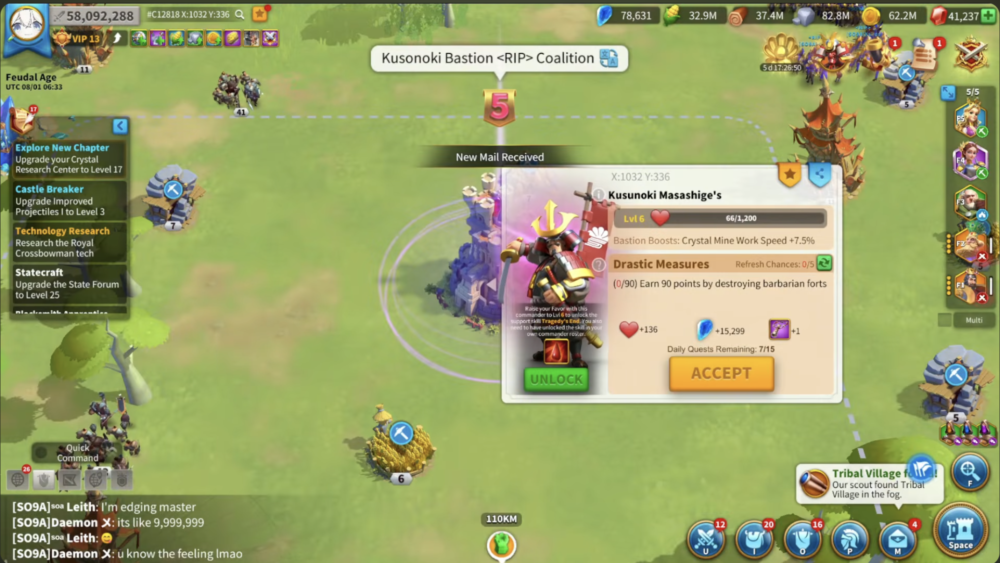
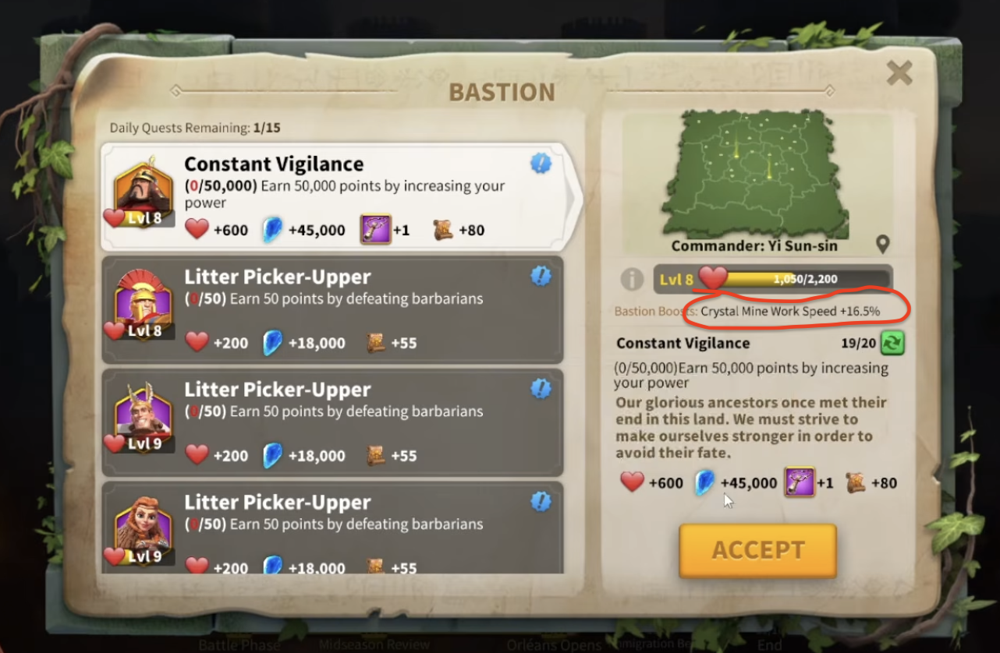
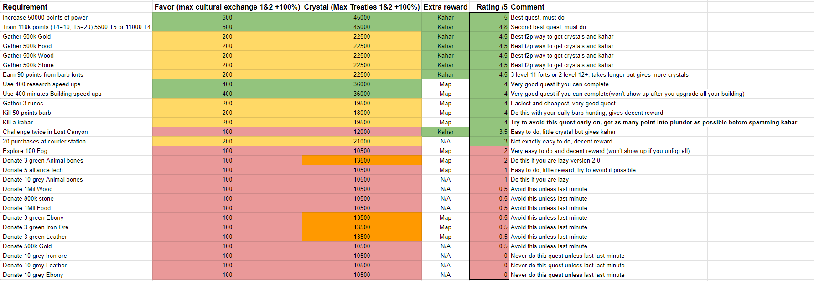

What are Bastions?
Bastions are special buildings found throughout the KvK map. Each Bastion is controlled by a commander who offers quests for you to complete.
Completing these quests gives you several rewards, including Favor, Crystals, and other items such as whistles.
For this guide, we will focus on the two most important rewards:
- Favor: Used to increase the level of a Bastion.
- Crystals: Used to upgrade your Crystal buildings and research Crystal Technology.
Both are important for your progress during KvK.

How to Unlock Bastions
Before you can complete quests from a Bastion, your alliance or coalition must connect its territory to that Bastion.
Once the Bastion is connected, you can start accepting and completing its quests.
Favor and Bastion Levels
Every time you complete a Bastion quest, you earn Favor.
As you collect Favor, the Bastion levels up.
The higher the Bastion's level, the greater the production boost it provides to your Crystal Mine.
This increases the number of crystals your mine produces, helping you progress faster through Crystal Technology.
The production bonus can vary depending on the Bastion's commander type and level.

Bastion Quests
Each Bastion offers quests that you can complete to earn rewards.
You can complete up to 15 Bastion quests per day, so choosing the right quests is important.
Crystal Rewards
Bastion quests are one of the main sources of crystals during KvK.
Not all quests give the same amount of crystals. Some are more rewarding than others.
You can refresh the available quests to look for better rewards.
Since you can only complete 15 quests per day, try to prioritize quests that give more crystals.
Which Bastion Quests Should You Complete?
The image below shows which Bastion quests are worth prioritizing and which ones are better to avoid, based on the amount of crystals they reward.
Use it as a reference when choosing your daily quests.

Commander Support Skills
Important: Commander Support Skills depend on the KvK story you are playing.
Some KvK stories allow you to unlock special commander support skills by increasing a Bastion's Favor level.
These skills provide additional bonuses that can help strengthen your marches during battle.